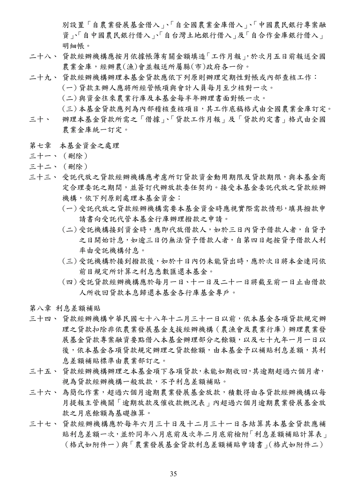

農業發展基金貸款作業規範及相關函釋
手冊頁：35 PDF頁：37／359
{kind=link}

展開查看PDF原始文字層
複雜表格欄列可能因文字層順序失真，請搭配原頁預覽查閱。
別設置「自農業發展基金借入」 、 「自全國農業金庫借入」 、 「中國農民銀行專案融 資」 、 「自中國農民銀行借入」 、 「自台灣土地銀行借入」 及 「自合作金庫銀行借入」 明細帳。 二十八、 貸款經辦機構應按月依據帳簿有關金額填造 「工作月報」 ，於次月五日前報送全國 農業金庫，經辦農(漁)會並報送所屬縣(市)政府各一份。 二十九、 貸款經辦機構辦理本基金貸款應依下列原則辦理定期性對帳或內部查核工作： (一) 貸款主辦人應將所經管帳項與會計人員每月至少核對一次。 (二) 與資金往來農業行庫及本基金每半年辦理書面對帳一次。 (三) 本基金貸款應列為內部稽核查核項目，其工作底稿格式由全國農業金庫訂定。 三十、 辦理本基金貸款所需之「借據」 、 「貸款工作月報」及「貸款約定書」格式由全國 農業金庫統一訂定。 第七章 本基金資金之處理 三十一、 （刪除） 三十二、 （刪除） 三十三、 受託代放之貸款經辦機構應考慮所訂貸款資金動用期限及貸款期限，與本基金商 定合理委託之期間，並簽訂代辦放款委任契約。接受本基金委託代放之貸款經辦 機構，依下列原則處理本基金資金： (一) 受託代放之貸款經辦機構需要本基金資金時應視實際需款情形，填具撥款申 請書向受託代管本基金行庫辦理撥款之申請。 (二) 受託機構接到資金時，應即代放借款人，如於三日內貸予借款人者，自貸予 之日開始計息，如逾三日仍無法貸予借款人者，自第四日起按貸予借款人利 率由受託機構付息。 (三) 受託機構於接到撥款後，如於十日內仍未能貸出時，應於次日將本金連同依 前目規定所計算之利息悉數匯還本基金。 (四) 受託貸款經辦機構應於每月一日、十一日及二十一日將截至前一日止由借款 人所收回貸款本息歸還本基金各行庫基金專戶。 第八章 利息差額補貼 三十四、 貸款經辦機構中華民國七十八年十二月三十一日以前，依本基金各項貸款規定辦 理之貸款扣除非依農業發展基金支援經辦機構（農漁會及農業行庫）辦理農業發 展基金貸款專案融資要點借入本基金辦理部分之餘額，以及七十九年一月一日以 後，依本基金各項貸款規定辦理之貸款餘額，由本基金予以補貼利息差額，其利 息差額補貼標準由農業部訂之。 三十五、 貸款經辦機構辦理之本基金項下各項貸款，未能如期收回，其逾期超過六個月者， 視為貸款經辦機構一般放款，不予利息差額補貼。 三十六、 為簡化作業，超過六個月逾期農業發展基金放款，積數得由各貸款經辦機構以每 月提報主管機關「逾期放款及催收款概況表」內超過六個月逾期農業發展基金放 款之月底餘額為基礎推算。 三十七、 貸款經辦機構應於每年六月三十日及十二月三十一日各結算其本基金貸款應補 貼利息差額一次，並於同年八月底前及次年二月底前檢附 「利息差額補貼計算表」 （格式如附件一）與「農業發展基金貸款利息差額補貼申請書」 （格式如附件二）